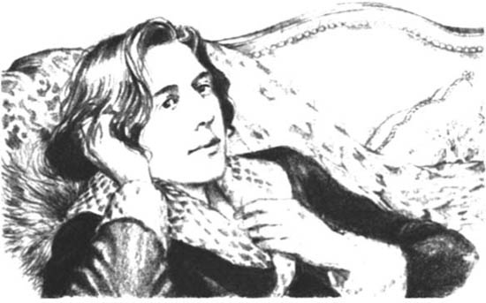

Listen to Part 1:
Oscar Wilde sinh năm 1854 tại Dublin, Ireland. Ông mất năm 1900 tại Paris. Nhiều tác phẩm truyện, kịch và thơ của Oscar Wilde vẫn còn được ưa chuộng.
Truyện: Chân dung Dorian Gray, Tội ác của Ngài Arthur Savile và những truyện ngắn khác, Hoàng tử hạnh phúc và những truyện cổ tích khác,
Kịch: Chiếc quạt của phu nhân Windermere, Người đàn bà vô danh, Người chồng lý tưởng, Tầm quan trọng của sự đứng đắn.
Thơ và tiểu luận: Bản ballad Nhà tù Reading, Ravenna, De Profundis.
